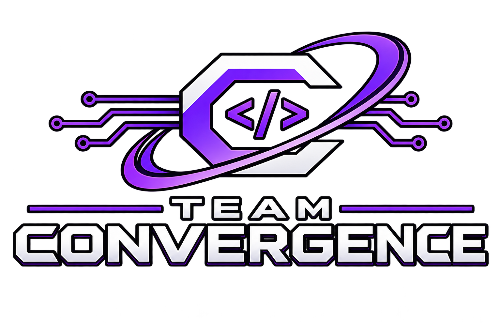
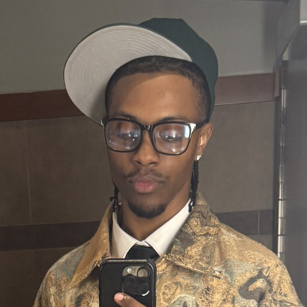
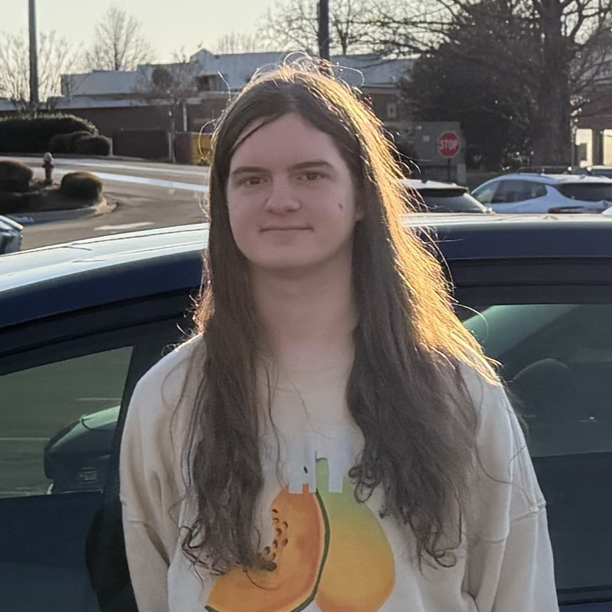

Software Engineering Student
Tim is a Computer Science student at UNC Charlotte with a background in elementary education. His experience as a teacher has strengthened his communication, creativity, and problem-solving skills. He is passionate about software development and enjoys learning how to build applications using Java, Python, and web technologies.

Software Engineering Student
Josh is a computer science student at UNC Charlotte concentrating in software engineering. Outside of class, he builds websites for local businesses, develops mobile apps, and plays basketball at UREC. He enjoys learning new technologies and is passionate about creating innovative solutions to real-world problems.

UI/UX Designer
Click a swatch to copy its color
Josiah is a UI/UX designer with a passion for creating user-friendly interfaces. He believes good design is invisible: when an interface works the way people expect, they never have to think about it. He enjoys turning rough sketches into clean, accessible layouts and pairing with developers to bring them to life.